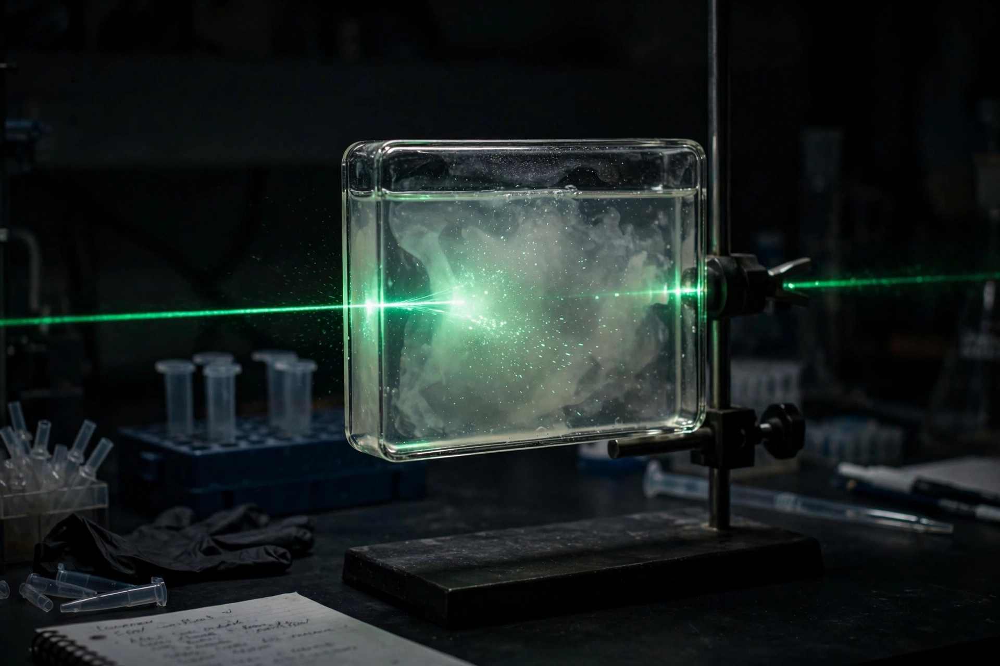

A colloid is a mixture in which one substance, consisting of microscopically dispersed insoluble particles, is suspended throughout another substance. The dispersed particles have diameters roughly between 1 nanometre and 1 micrometre — larger than molecules in a true solution, but small enough that they do not settle out under gravity and cannot be separated by ordinary filtration. The word was coined by the Scottish chemist Thomas Graham in 1861, from the Greek kolla (glue). Familiar colloids include milk, fog, blood, paint, whipped cream and coloured glass.
| Colloid | |
| Particle size | approx. 1 nm – 1 µm |
|---|---|
| Components | Dispersed phase + continuous (dispersion) medium |
| Key phenomena | Tyndall effect; Brownian motion |
| Coined by | Thomas Graham (1861) |

The Tyndall effect: a beam of light becomes visible when scattered by colloidal particles.
Colloids are classified by the physical states of the dispersed phase and the medium:
| Dispersed phase | Medium | Name | Example |
|---|---|---|---|
| Liquid | Gas | Aerosol | Fog, mist |
| Solid | Gas | Solid aerosol | Smoke, dust |
| Gas | Liquid | Foam | Whipped cream, shaving foam |
| Liquid | Liquid | Emulsion | Milk, mayonnaise |
| Solid | Liquid | Sol | Paint, blood, ink |
| Gas | Solid | Solid foam | Pumice, foam rubber |
| Liquid | Solid | Gel | Gelatin, jelly, opal (partly) |
| Solid | Solid | Solid sol | Ruby glass, cranberry glass |
Colloidal particles are large enough to scatter light — the Tyndall effect, which makes a light beam visible in fog or in a dusty room — but small enough to be kept permanently suspended by collisions with the molecules of the medium, observed under the microscope as Brownian motion. Einstein's 1905 theoretical treatment of Brownian motion, confirmed experimentally by Jean Perrin, provided decisive evidence for the physical reality of atoms and molecules.
Colloidal particles frequently carry an electrical charge and are kept apart by the mutual repulsion of their electrical double layers; a protective "zeta potential" stabilises the sol. Adding electrolytes compresses the double layer and can cause the particles to clump together — coagulation or flocculation — the principle behind water purification with alum and the formation of river deltas where fresh water meets the sea. Hydrophilic colloids such as gelatin are stabilised by solvation and are reversible, while hydrophobic colloids such as gold sol are lyophobic and coagulate irreversibly. Protective colloids and surfactants are used to stabilise emulsions throughout the food, pharmaceutical and paint industries.
Colloids are prepared either by breaking down bulk material (dispersion methods: milling, peptisation, electric-arc methods) or by building particles up from solution (condensation methods: controlled precipitation or reduction, as in Faraday's gold sols of 1857). Purification uses dialysis — Graham's own invention — ultrafiltration and ultracentrifugation.